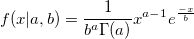

Gampdf
Gampdf-func
Definition
Y = gampdf(X,a,b) computes the gamma probability density function at each of the values in X using the corresponding shape parameters in a and scale parameters in b.
- 
Parameters
- x (input, double)
- a (input, double)
- shape parameter .
- b (input, double)
- scale parameter
/math-a73c373ed1072d9d49add37ee0b22203.png "b >0") .
.
See Also
Cauchypdf, exppdf, Lappdf, Lognpdf, Normpdf, Poisspdf